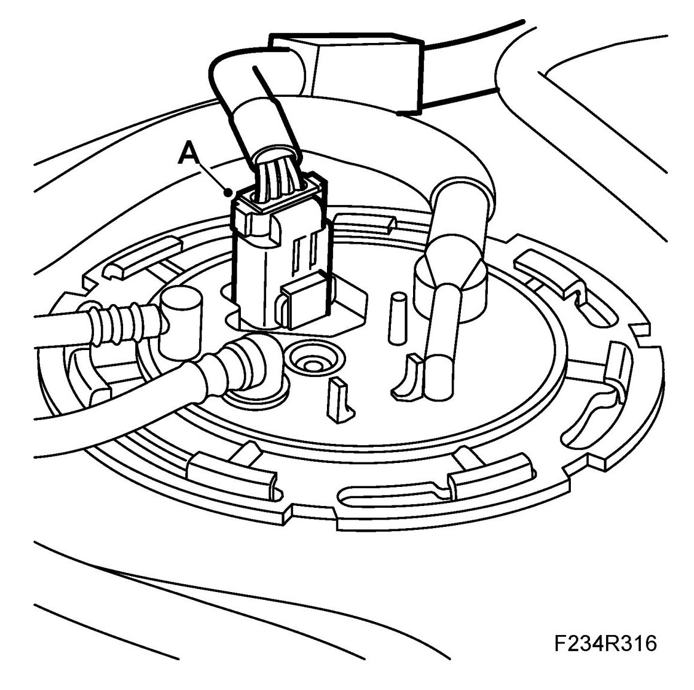
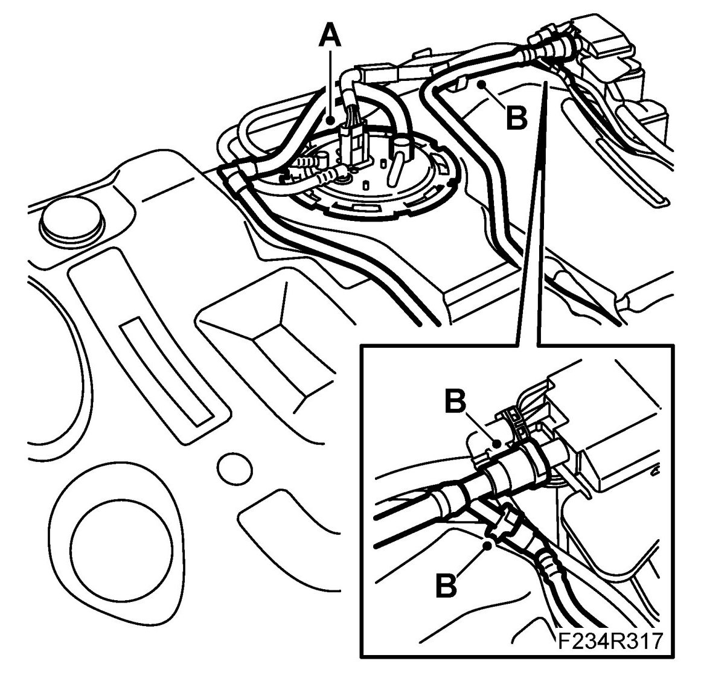
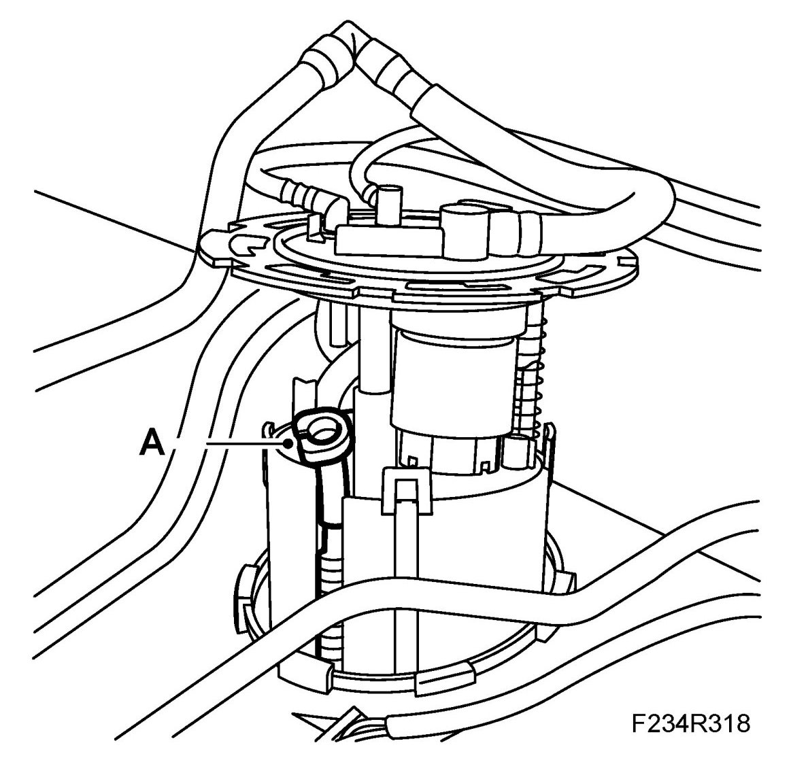
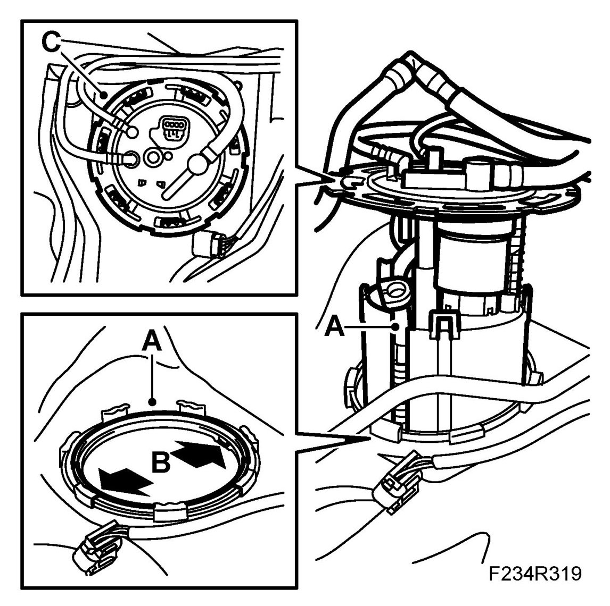
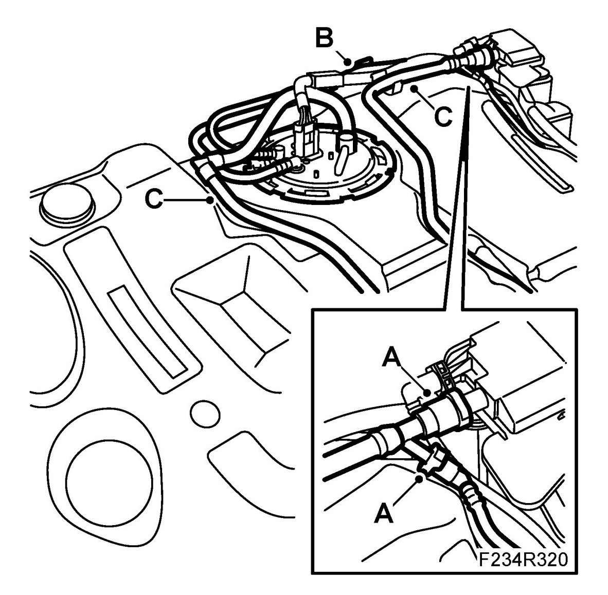
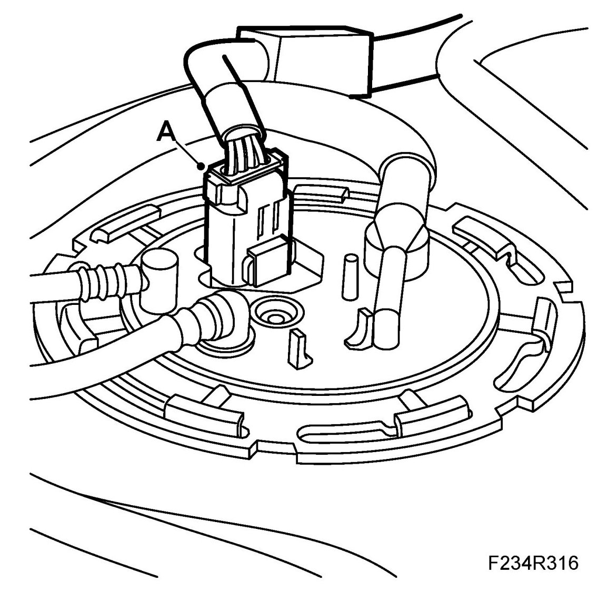

Fuel Pump, E85
Fuel Pump, E85
WARNING:
The work involved in removing the fuel pump requires working with the vehicle's fuel system. The following points should therefore be heeded in conjunction with these measures:
- Have a class BE fire extinguisher on hand. Be aware of the risk of sparks, i.e. in connection with electric circuits, short-circuiting, etc.
- Absolutely No Smoking.
- Ensure good ventilation. If there is approved ventilation for evacuating fuel fumes then this must be used.
- Wear protective gloves. Prolonged exposure of the hands to fuel can cause irritation to the skin.
- Wear protective goggles.
IMPORTANT: Be particularly observant regarding cleanliness when working on the fuel system. Loss of function may occur due to very small particles. Prevent dirt and grime from entering the fuel system by cleaning the connections and plugging pipes and lines during disassembly. Use 82 92 948 Plugs, A/C system assembly. Keep components free from contaminants during storage.
To remove
1. Remove the fuel tank.
2. To prevent dirt entering the fuel system, clean the outside of the tank if necessary before removing the fuel pump.
3. Unplug the fuel pump connector (A).

4. Remove the fuel pump. Use tool 83 96 194 Fitting tool, fuel armature to undo the fuel pump lock ring (A).

5. Undo the quick couplings on the EVAP canister and the hoses from the tank's fastenings (B).
6. Raise the fuel pump slightly, press in the catch and undo the quick coupling for the tank bleeder from the fuel pump (A).

7. Carefully lift up the fuel pump and place it in a receptacle.
IMPORTANT: Take care not to damage the fuel level sensor.
To fit
1. Fit a new seal (A). Lift the bleeder hose, semi-insert the fuel pump and connect it to the pump cover. Carefully lower the fuel pump into the tank (A).

2. Make sure the recesses in the tank connection are in line with the corresponding heels on the pump cover (B).
3. Make sure the seal is located correctly. Tighten the fuel pump's fastening using 83 96 194 Fitting tool, fuel armature (C).
4. Connect the quick-release couplings to the EVAP emission canister (A).

5. Attach the fuel lines to the fasteners on the fuel tank (B).
6. Secure the ventilation line to the outlet in the tank (C).
7. Plug in the fuel pump connector (A).

8. Fit the fuel tank.